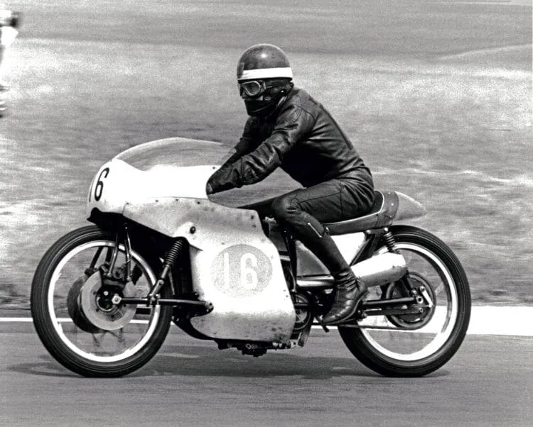
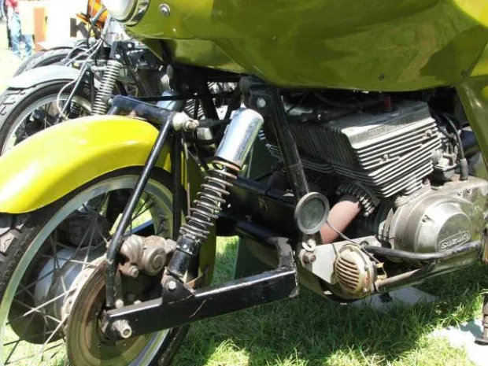
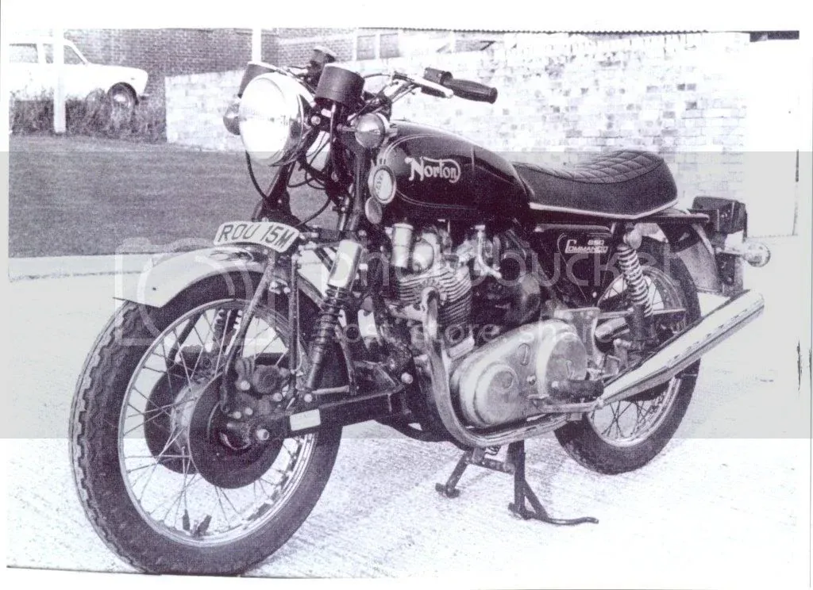
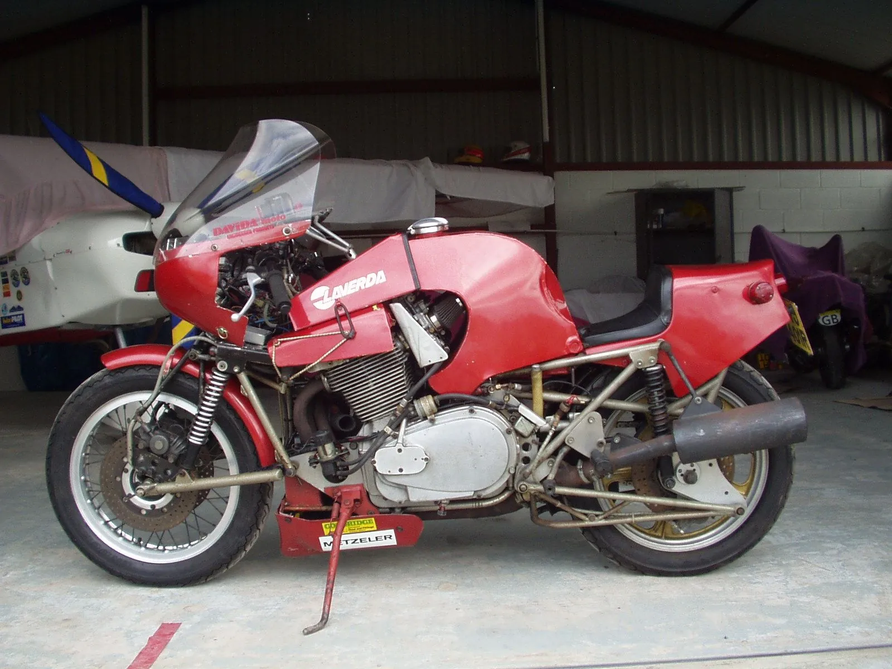
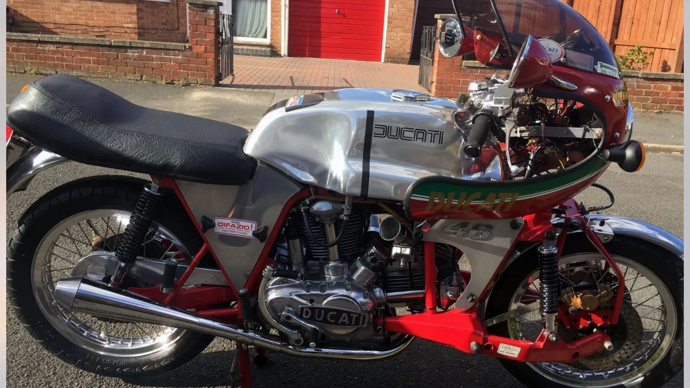
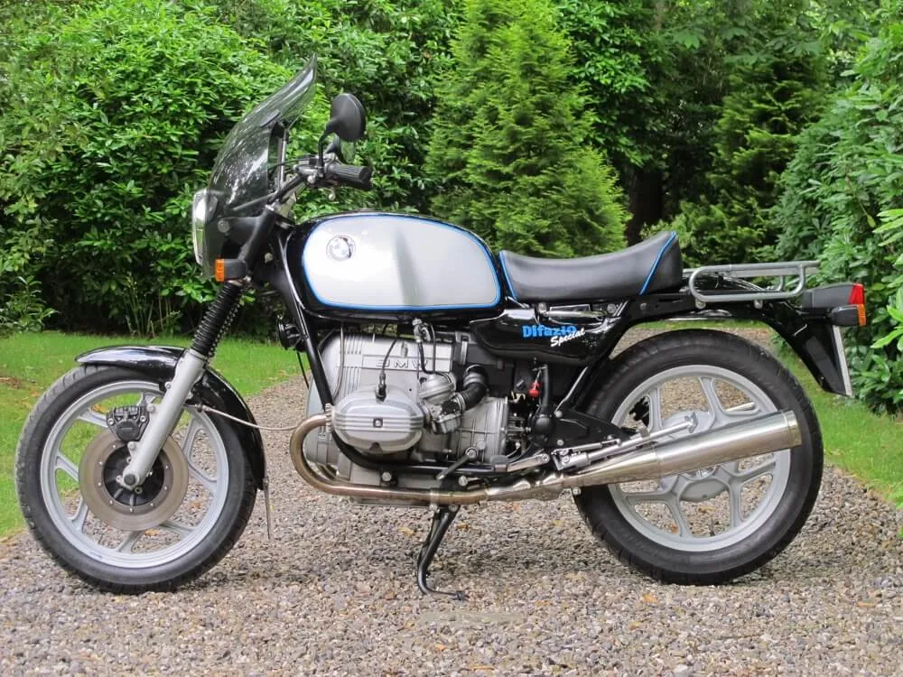

Behind the shop, in a former abattoir, Jack and a team of three (Pat Hooper, Trevor Burridge and Tim Tucker) made the frames, turned the hubs, laid the fibreglass and assembled every machine.

1968 · RacerAJS 7R special
The first solo hub-steerer, built entirely in-house around an ex-Hailwood AJS 7R engine. Richard raced it at Thruxton and Cadwell Park.
Photo: Difazio family archive / The Classic MotorCycle, courtesy of Classic Bike Hub — with thanks.
1969 · RoadTriumph Trident
The first hub-steered road bike, seen on Frome’s streets in autumn 1969. Four Tridents were eventually converted.
c.1970 · RoadSuzuki 500 “EYB 999J”
Road-tested by several journalists, then sold to a customer in the USA.
1971 · Kevin CharlesBSA Rocket 3
The only Rocket 3 hub-steerer. Kevin sold it in 1977 as a deposit on his first house and bought it back 18 months later.

1973 · Roger MargettsSuzuki GT550
Built from a written-off GT550K, first owned by an RAF fitter, and featured in Bike in 1974. It sold at auction in 2005 for £1,500, with 17,000 miles on it.
Photo: BIKE ME!, courtesy of bikeme.tv — with thanks.

1973–74 · NortonNorton Commando
An Andover Norton press bike converted for Norton’s Mike Jackson. Its owner says the Norton board learned of the project afterwards.
Photo: Tim (forum member “difazio”), courtesy of Access Norton forum — with thanks.

1975 · EnduranceMead & Tomkinson “Nessie”
Difazio supplied Mead & Tomkinson’s first two hub-centre chassis. Their Laverda 1000 racer, with adapted Difazio steering, finished 10th at the 1976 Barcelona 24 Hours.
Photo: Bonhams, courtesy of Bonhams lot 417 (2007) — with thanks.

1975 · Complete bikeDucati 750GTE
One of only two complete Difazio motorcycles, with a rare electric-start roundcase engine. It sold at Bonhams for £12,650 in 2019.
Photo: Bonhams, courtesy of Bonhams lot 386 (2019) — with thanks.
1976 · Kevin CharlesTriumph Hurricane
One of three built that spring. It won the Kay Engineering Trophy at Stafford in 2012.
1985 · Dave AyesthorpeHonda Gold Wing
One of two hub-steered Gold Wings, with over 100,000 miles covered. A second hub went on after a crash in 1987.
1970s · John MayBMW R90S
It came with a huge Falcon touring fairing that took two people three hours to remove.

2007/8 · RichardBMW R65 Difazio Special
The last of five lightweight 750–854cc roadsters built by Richard, this one for himself.
Photo: Classic Super Bikes, courtesy of Classic Super Bikes — with thanks.